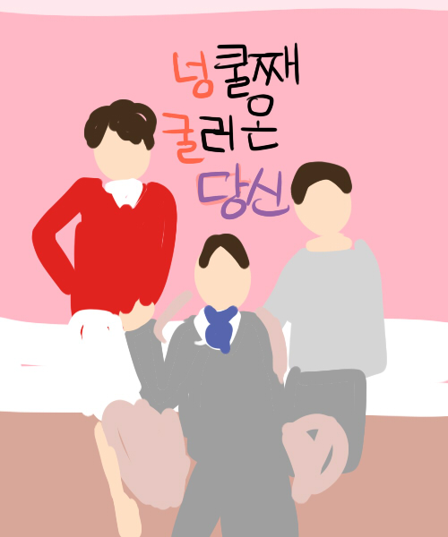

|  | 제목 : 넝쿨째 굴러온 당신 | 연출 : 김형석 극본 : 박지은 |
| ▶작품 소개 능력 있는 고아를 이상형으로 꼽아온 커리어 우먼 차윤희가 완벽한 조건의 외과 의사 방귀남을 만나 결혼에 골인 하지만 상상하지도 못 했던 시댁 등장으로 생기는 파란만장 사건들을 유쾌한 웃음과 감동으로 그려낸 드라마 | ||
| ▶제작자 리뷰 솔직히 말하면 시댁이 생겨서 한순간에 인생이 망해버리고 시월드에 강제 입성한 여자의 이야기가 아닐까싶다.. 꽤 재밌다. |
||
| 제작자 평점 ★★★★☆ | 최고 시청률 45.3% | |
| 장르 : #가족 #일상 #개그 #감동 | ||